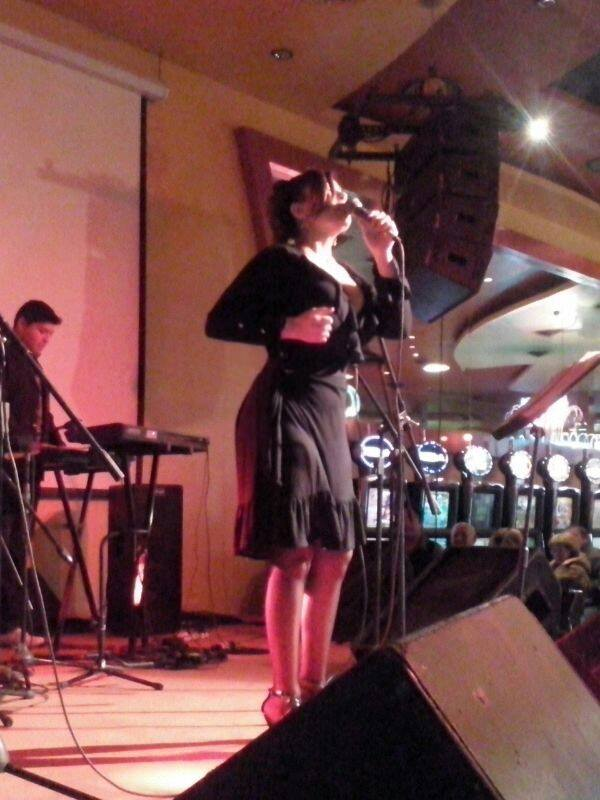
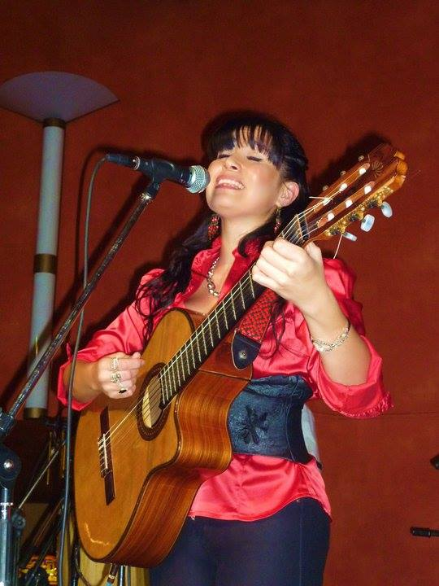
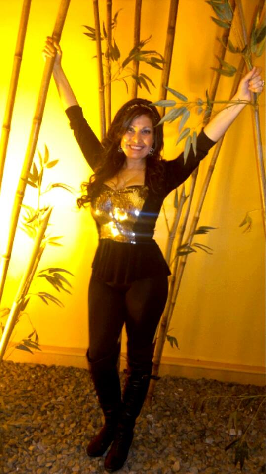
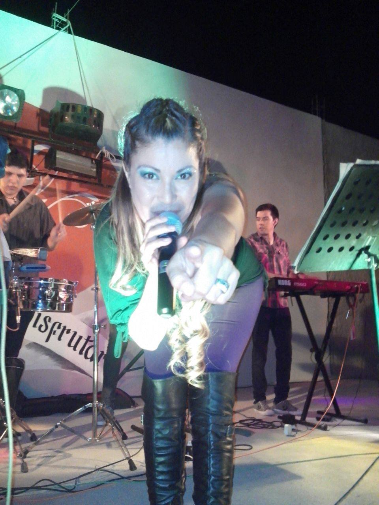
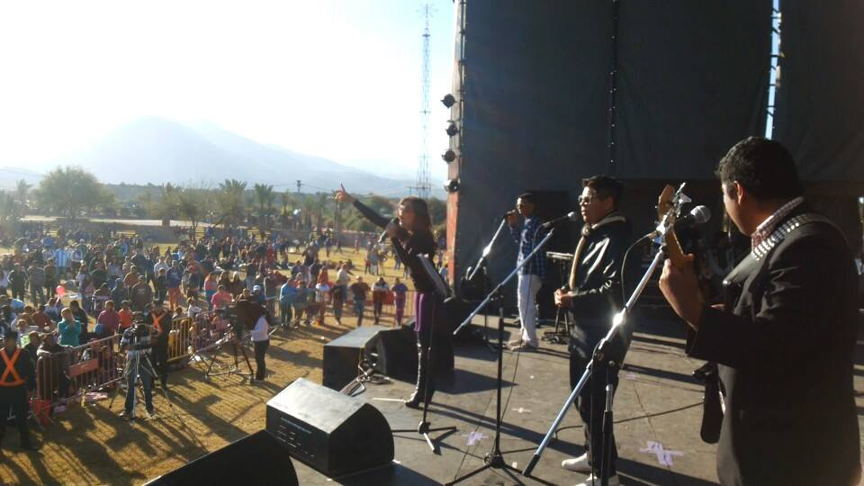

Paola Diaz, La Loba
Cantante riojana con más de 30 años de trayectoria
Galería de Fotos
Explora momentos destacados de la carrera de Paola Diaz, La Loba





Biografía
Conoce la trayectoria artística de Paola Isabel Díaz García
🐺 Paola Isabel Díaz García – "La Loba"
Nacida en Banfield (Buenos Aires) y criada en La Rioja, Paola Díaz comenzó su camino artístico en el Centro Polivalente de Arte "Estanislao Guzmán Loza", donde estudió Danzas Folklóricas Argentinas y Latinoamericanas.
A temprana edad se destacó como solista de canto, obteniendo múltiples premios en certámenes estudiantiles nacionales, entre ellos cinco ediciones consecutivas del festival "Saldán Folklore Joven" (Córdoba). Formó parte del grupo Piaguivoz, con el que recorrió festivales del país y ganó en el Festival de la Aceituna (Arauco) y en San Nicolás de los Arroyos (Buenos Aires).
En 1995 fue convocada como corista del Súper Grupo Manzana, convirtiéndose junto a Verónica Maza en una de las primeras mujeres coristas del cuarteto riojano. Grabó ocho discos y representó al género en todo el país.
En 2003 inició su carrera solista, participando en el Festival Nacional de la Canción (La Rioja), donde fue reconocida como Mejor Solista de Canto. A partir de allí amplió su repertorio incorporando folklore, música mexicana, tango, cuarteto y melódico, convirtiéndose en la única artista riojana en dominar varios géneros.
En 2010 regresó a Súper Grupo Manzana para "El Reencuentro", esta vez como socia y cantante solista, hasta 2012. Luego se incorporó al Staff de la Secretaría de Cultura de La Rioja y fundó su propia banda tropical, dando origen a su nombre artístico: "La Loba".
Con más de 30 años de trayectoria, Paola "La Loba" Díaz sigue recorriendo escenarios del país con la misma pasión, fuerza y carisma que la consagraron como una de las voces más queridas del norte argentino.
Contacto
Contrataciones y presentaciones